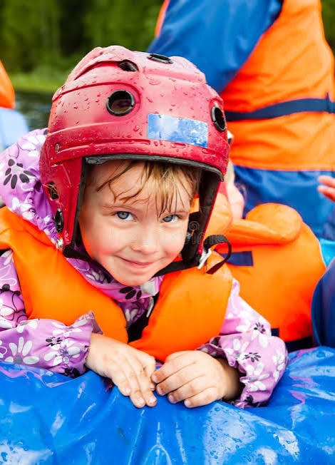

White Water Rafting Company

Our goal is to ensure an adventure and relaxation center. A place
that takes
people beyond
the familiar and into experiences that awaken courage, connection, and a
deeper respect for nature.
The mission is to create safe, unforgettable rafting adventures
that challenge
people to work together, embrace the wild, and discover what they are capable
of.
Our creed We respect the river. We protect the wild. We look after
our people.
And when the water gets rough, we don't run from it — we ride it.
Motto: Face the Current.
Find Your Flow.
History
Water rafting began as a practical way of navigating rivers before becoming the
adventure sport we know today. Early river travelers used simple wooden rafts
to transport people and goods across difficult waterways.
Modern whitewater rafting developed in the mid-20th century as people began
using specially designed inflatable boats to explore fast-moving rivers for
recreation. By the 1970s and 1980s, rafting had grown into an international
adventure activity, combining teamwork, navigation, and the excitement
of navigating rapids.
Today, rafting is enjoyed around the world as both a recreational sport and a
form of outdoor tourism, giving people the opportunity to experience rivers
while developing courage, teamwork, and respect for nature.